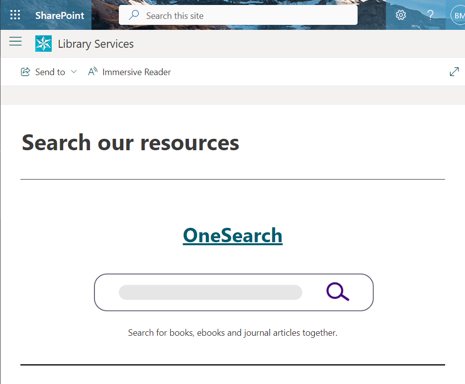
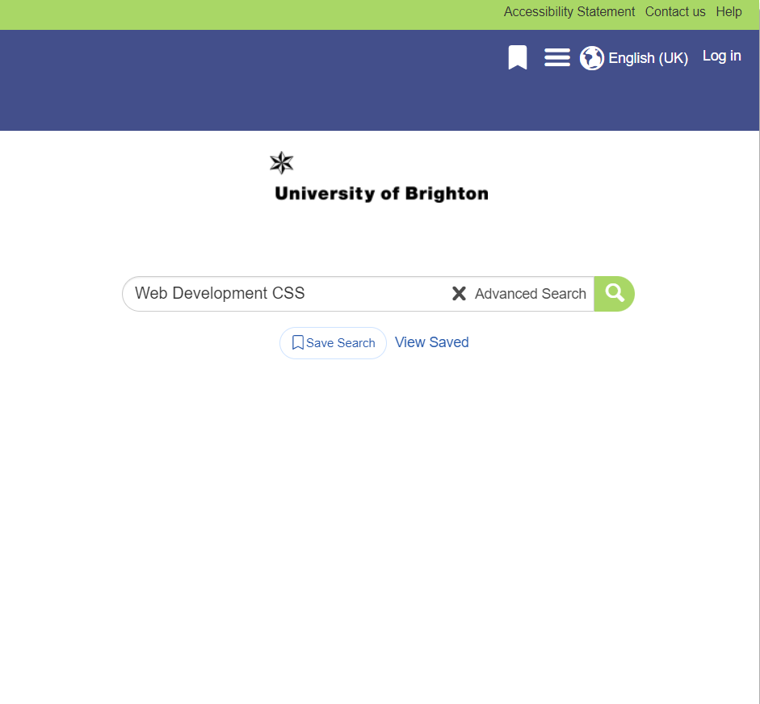
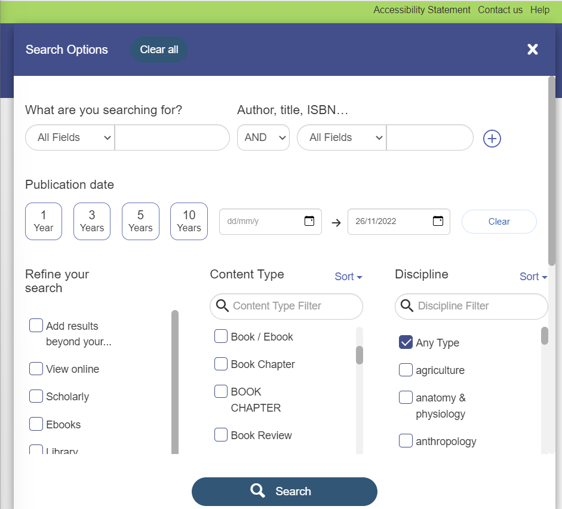
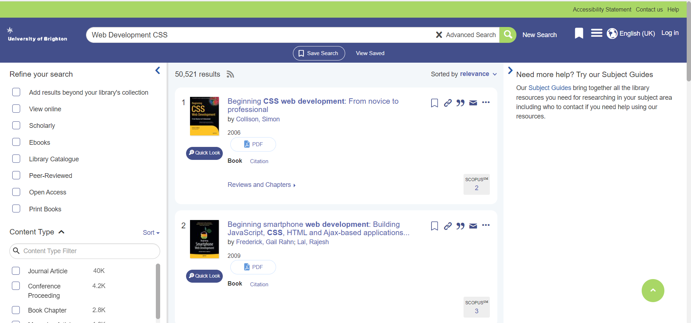
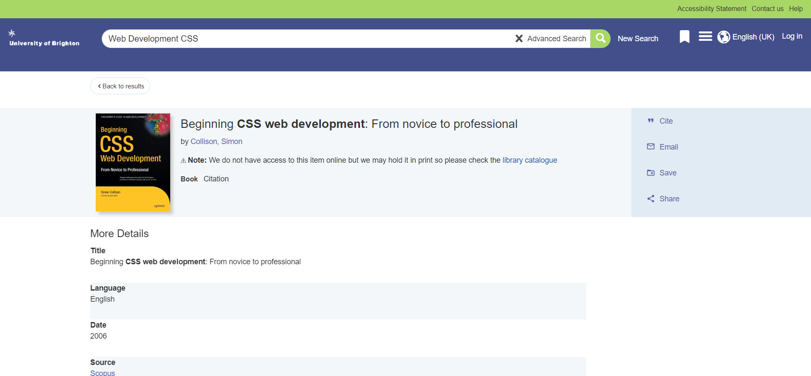
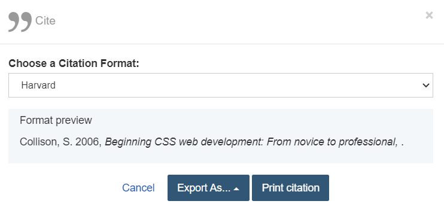
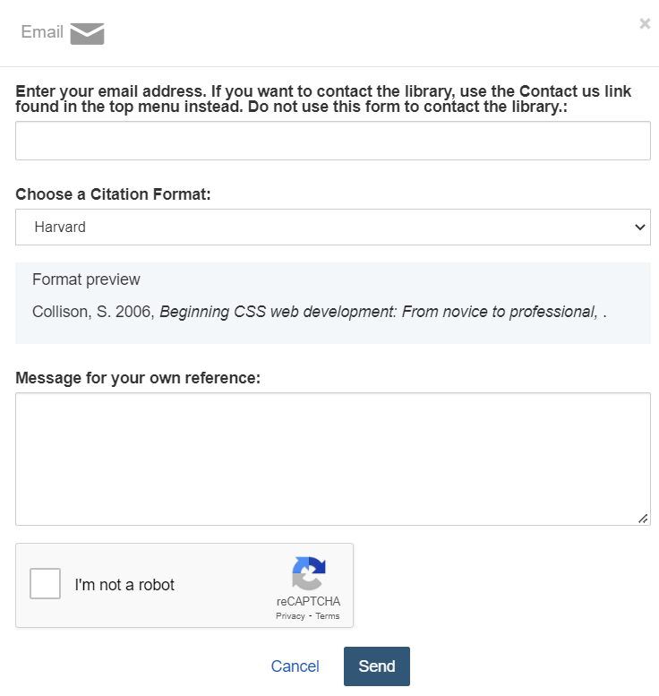
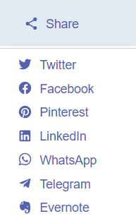

OneSearch
The University of Brighton Library has a online resource called OneSearch. This is used to be able to search for books, ebooks and most journal subscription the university is subscribed to.
How to use OneSearch
-
Navigate to OneSearch through clicking the library services button on MyBrighton and scrolling done until you see OneSearch 
-
Type into the search bar key terms related to what you want to find. In this example I am trying to find books or journals on CSS and Web development 
-
To make your search more specific, click on advanced search, here you can add a lot more specifics such as how recent the publication was, what type of content shows up and manyother things 
-
The centre column contains all the relevant books and journals that the university has access to, on the left has the same options as the advanced search so you can lessen the amount of content to look through. On the right has a link to take you to subject guides, these are good if you need a place to start as your lecturers reccomend books tha you can read. 
-
When you click on a book in the middle a new page will open showing you more information about that book ,such as where to access it. for books with no online access you can check wether the library has a copy. for some there will be a pdf or online access button on the page beforehand, clicking those buttons will take you to the online copy of the book. 
-
If you need to cite a book you can click on the cite button, once you select which type of referencing style you need, it will automatically gentrate the refernce for you to copy into you work 
-
You can also email books to yourself for future reference. 
-
You can also share the book to social medias or messages. 